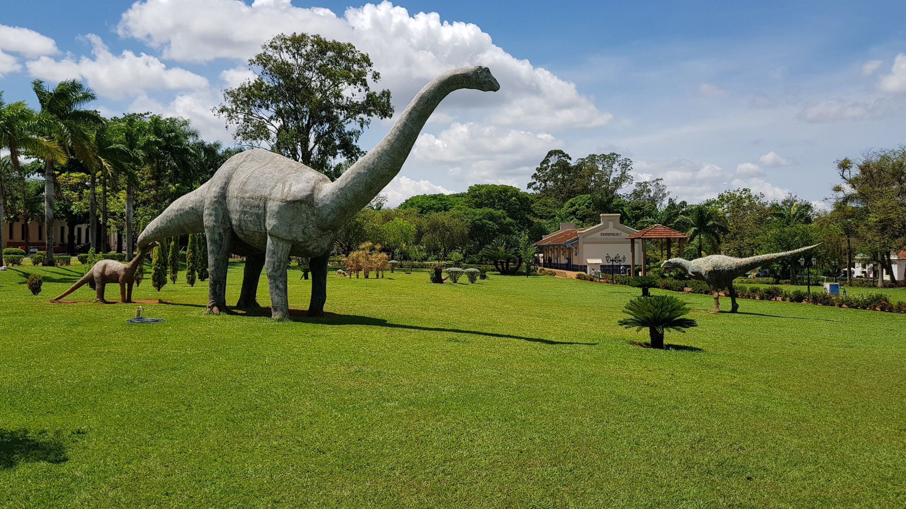
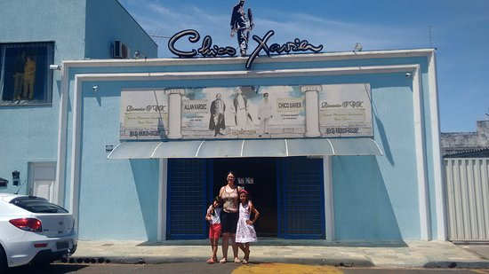
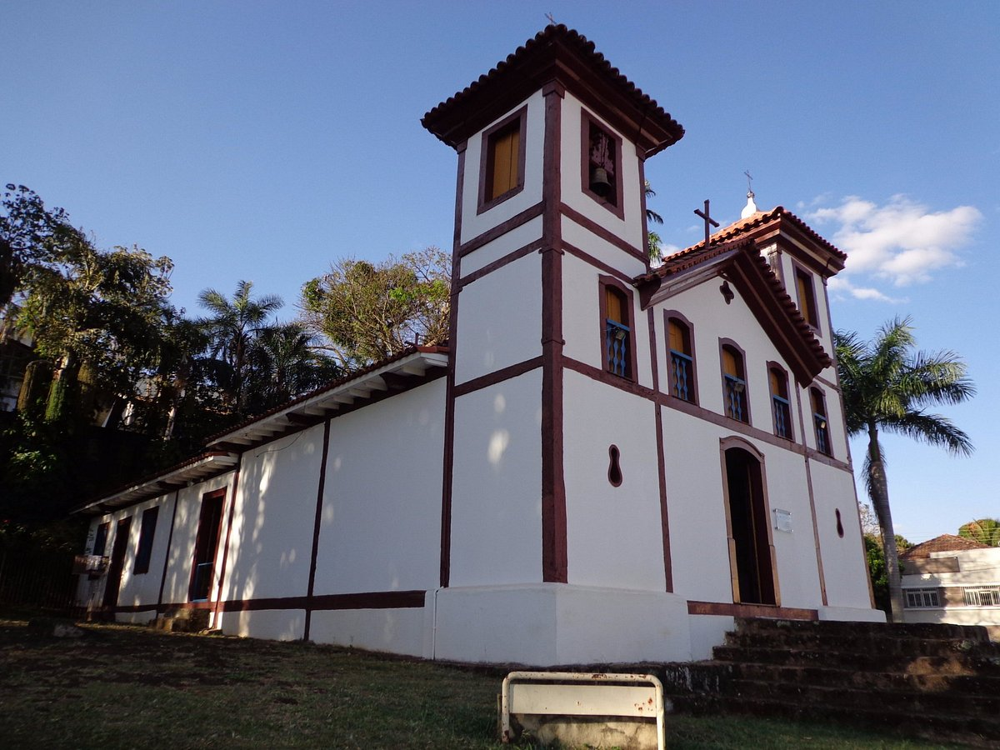
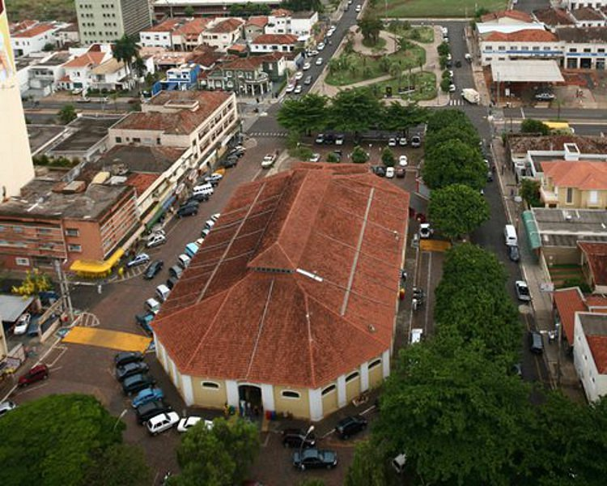
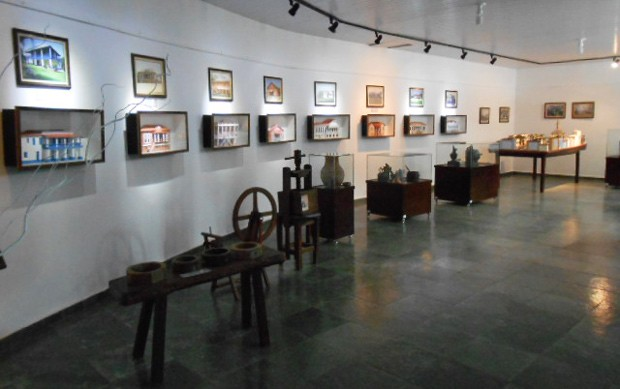

-
Peirópolis
 -
Memórial Chico Xavier
 -
Museu de Arte Sacra
 -
Mercado Municipal
 " -
Museu do Zebu

Peirópolis é um bairro dito como rural de uberaba fica a 20km da cidade e é um ótimo lugar para ser visitado, pois além da beleza natural que esse lugar tem, ele também é rico em história sendo considerado um dos maiores museus de dinossauros do mundo. A maior atração do museu é o rico acervo de fósseis de dinossauros e outros vertebrados. Conta ainda com painéis explicativos sobre a evolução da vida e dioramas que reconstituem os cenários da vida e dos animais e vegetais que habitaram a região de Uberaba há milhões de anos. O horário de funcionamento do museu é das 8 as 17 de terça a domingo
Memorial Chico Xavier é uma homenagem e uma forma de deixar vivo o legado deixado pelo médium, é o imovel onde ele viveu e que foi transformado em uma Casa de Memórias e lembranças de Chico Xavier. Funciona de segunda a sexta das 08h as 11h e depois das 13 ás 17:30. Já aos sábados, o horario é das 8h as 12h e fica localizado na Avenida João XXIII, 2011, Praça das Américas – Uberaba (MG).
O Museu de Arte Sacra é um museu brasileiro localizado em Uberaba, no estado de Minas Gerais. A estrutura da Igreja de Santa Rita, construída no ano de 1854, é a base desse elemento histórico, tombado pelo Patrimônio Histórico e Artístico Nacional em 1939. Com um acervo repleto de itens característicos do período barroco, dos séculos XVIII e XIX, o museu conta a trajetória da Igreja Católica na região por meio das vestes litúrgicas e paramentos sagrados, estandartes de procissões, imagens, móveis, entre outros. O museu funciona de segunda a sexta das 7h as 18h
O Mercado Municipal funciona em prédio erguido em 1922, na Praça Manoel Terra. Sofreu reformas em 1936 e 1992, que modernizaram seu interior e todas as suas instalações, mas que conservaram seu estilo original. É uma excelente opção para compras de produtos típicos mineiros, frutas, verduras, laticínios, carnes e peixes, além de contar com outras lojas de produtos típicos. O horario de funcionamento é de segunda a sabado das 7h as 18h e dias de domindo das 7h as 12h
E por ultimo mas não menos importante temos o museu zebu que tem toda a história escrita sobre a chegada do Zebu no Brasil e seu desenvolvimento em Uberaba. Tem mostra de objetos de época em um ambiente de muito Bom gosto, ao lado da loja da marca Zebu, para o turista ou morador da cidade que queira comprar uma lembrança ou presente.